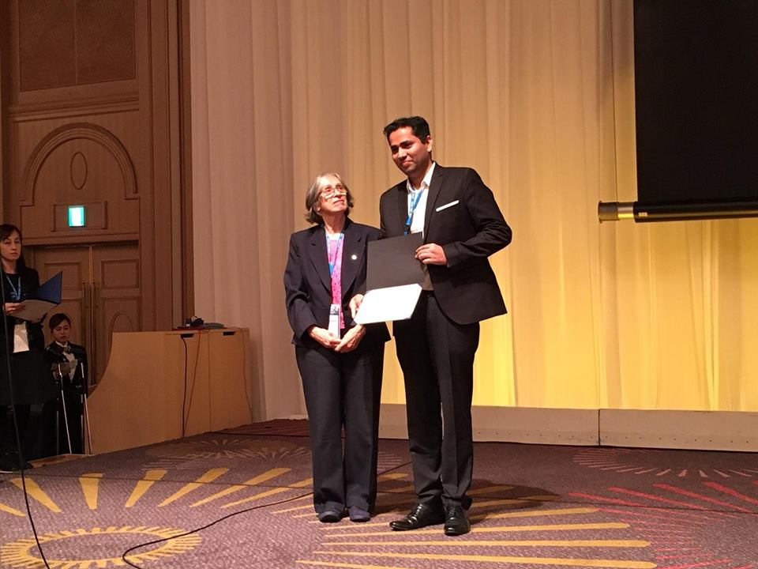

I am an Assistant Professor at
Indian Institute of Science (IISc.), Bengaluru in
Robert Bosch Centre for Cyberphysical Systems (RBCCPS) jointly with
Centre for Infrastructure, Sustainable Transportation, and Urban Planning (CiSTUP).
Previously I worked as a Postdoctoral Researcher at the
Senseable City Lab at
Massachusetts Institute of Technology, Cambridge, USA for two years and at Grab-NUS AI Lab,
Institute of Data Science, National University of Singapore (NUS) for nine months where I worked on mobility analytics, taxi-passenger matching, driver behavior modeling. I received my Ph.D. degree from the
Department of Electrical and Electronics Engineering, University of Melbourne, Australia in 2019. From July 2011 to November 2014, I was a Researcher in the
Automation Division, TATA Steel Limited, India where I developed several image processing and machine learning-based real-time systems for manufacturing industries.
My current research interests are:- Big data analytics, Un/Semi/Self-supervised learning, Explainable AI/ML, Data-Driven Analytics for Autonomous Systems and Transportation, Spatio-temporal Data Mining, and Streaming data analytics. I am also interested in ML and AI applications to solve complex real-world problems in areas such as transportation, agriculture, healthcare, infrastructure, robotics, and vision.
Please send me an email if you are interested in my work or collaboration.
Previous Research Experience
Postdoctoral Research Fellow, Senseable City Lab, Massachusetts Institute of Technology, Cambridge, USA , Nov 2019 - Present, Advisor: Prof. Carlo Ratti and Dr. Paolo Santi
Postdoctoral Research Fellow, Grab-NUS AI Lab, Institute of Data Science, National University of Singapore, March 2019 - Oct 2019, Advisor: Prof. Tan Kian Lee
Research Assistant, School of Information Technology, Deakin University, Burwood, Australia, Aug 2018 - Nov 2018
Researcher, Automation Division, Tata Steel Ltd, Jamshedpur, India, July 2011 - Feb 2019
Education
Ph.D. 2019, ISSNIP Lab, The University of Melbourne, Australia, "Big Data Cluster Analysis and its Applications", Supervisors: Prof. Marimuthu Palaniswami and Prof. (Emeritus) James C. Bezdek
M.Tech. 2011, Indian Institute of Technology (IIT), Kharagpur, India. Supervisors: Prof. Soumen Das and Prof. Alok Barua.
B.Engg. 2009, Shri Govindram Seksaria Institute of Technology and Science (SGSITS), Indore, India.
Honors and Awards
- Recipient of Best Paper Award at EAI International Conference on Intelligent Transportation Systems (EAI-INTSYS), Dec 2021
- Nominated for Chancellor's Prize for Excellence in the Ph.D. Thesis 2020, at the University of Melbourne., May 2020.
- Recipient of the Outstanding Ph.D. Thesis Work Grant in Cybernetics from IEEE System, Man, and Cybernetics Society, Nov 2019.
- Recipient of Best Student Paper Award Finalist at IEEE System, Man, and Cybernetics (SMC) Conference at Miyazaki, Japan, Oct 2018
- Recipient of Student Travel Grant to attend IEEE System, Man, and Cybernetics (SMC) Conference, Oct 2018
- Recipient of Best Paper Award at IEEE World Forum on Internet of Things (WF-IoT) at Singapore, Feb 2018
- Recipient of Melbourne International Fee Remission Scholarship (MIFRS) and Melbourne International Research Scholarship (MIRS) , Nov'2014 - Aug'2018
- Recipient of Postgraduate Scholarship from Ministry of Human Resource and Development, India, July'2009 - June'2011
- Secured All India Rank 62 (98.83%ile) in Graduate Aptitude Test in Engineering (GATE) in Instrumentation Engineering, March 2009
Services
- TPC Member, EAI Broadnets, 2021
- Reviewer for:
- IEEE Transactions on Knowledge and Data Engineering
- IEEE Transactions on Intelligent Transportation Systems
- IEEE Transactions on Big Data
- IEEE Transactions on Fuzzy Systems
- IEEE Transactions on Cybernetics
- IEEE Internet of Things Journal
- IEEE Open Journal of Intelligent Transportation Systems
- Pattern Recognition Journal- Elsevier
- Complex & Intelligent System- Springer
- International Journal on Distributed Sensor Networks
- IEEE World Forum on Internet of Things (WF-IoT), 2021
- IEEE PowerTech Conference 2021
- Board of Studies Member in SAGE University, Indore, India, May'19-Present
Invited Talks/Webinars/Workshops
- Invited Webinar ("Tatsujin Speak") on "Transportation Revolution through AI" : Advance Data Science Approaches to Mobility" at Mizuho India Japan Study Centre (MIJSC), IIM Bangalore, October 2022
- Invited Panelist for theme "Social Factors in AI for Mobility", i-Hub Mobility Summit, IIIT Hyderabad, India, September 2022
- Invited Speaker on "Cluster Structure Assessment and Change Detection in Streaming Data" at EECS Symposium, IISc Bangalore, India, 2022
- Guest Talk on "Cluster Structure Assessment for Streaming Data and its applications for IoT and Transportation" at Centre for Networked Intelligence (CNI), IISc Bangalore, India, March 2022
- Guest Lecture on "Data-Driven Analytics for Autonomous Systems" at M.S. Ramaiah Institute of Technology (MSRIT), Bangalore, India, March 2022
- Guest Talk on "Big Data Analytics and its Applications" at National Institute of Technology (NIT), Rourkela, India, Feb 2022
- Virtual Workshop on "Regression and its Applications in Manufacturing Industries" at Steel Authority India Limited (SAIL), Bokaro, India, July 2021
- Guest talk on Big Data Clustering and Urban Analytics in IEEE Symposium on Data Analytics and Internet of Things (ISDAIOT), Nov 2020
- Keynote talk on Driving Behaviour Classification from Naturalistic driving data at 1st International Conference on Recent Innovations in Science Engineering and Technology (ICRISET), Sep 2020
- Driving Style Recognition of Professional Drivers, MIT DUSP, June 2020
- Keynote talk on Urban Intelligence at National Conference Interdisciplinary Research and Innovative Technologies at SAGE University, India, June 202
- Drivers' Profiling for Taxi Allocation and Driving Behaviour Analysis at Grabtaxi Ltd. Singapore, July 2019
- Large-scale trajectory prediction, IDS, NUS Singapore, July 2019
- Big Data Analysis and Urban Intelligence, MIT DUSP, June 2019
- Cluster Assessment on Streaming Data Clustering, CSIRO, Melbourne, October 2017